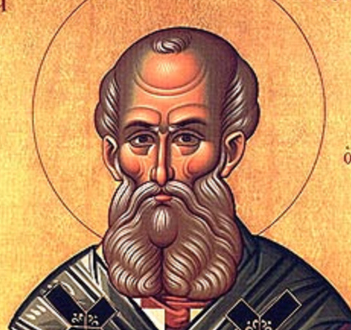

1. Jahrhundert
Noch keine direkten Zitate über die Eucharistie im 1. Jahrhundert vorhanden. Schauen Sie sich die übrigen Jahrhunderten an!
2. Jahrhundert

Hl. Ignatius von Antiochien
(ca. 107 n. Chr.)"Lasse sich niemand täuschen! Auch die himmlischen Mächte, die Herrlichkeit der Engel und die sichtbaren wie unsichtbaren Herrscher - wenn sie nicht an das Blut Christi glauben, kommt auch über sie das Gericht. Denn das Ganze ist Glaube und Liebe, die von nichts übertroffen werden."
"Von Eucharistie und Gebet halten sie sich fern, weil sie nicht bekennen, daß die Eucharistie das Fleisch unseres Erlösers Jesus Christus ist, das für unsere Sünden gelitten, das der Vater in seiner Güte auferweckt hat. Die sich nun der Gabe Gottes widersetzen, sterben an ihrem Streiten."
"Jene Eucharistie soll als zuverlässig gelten, die unter dem Bischof, oder, wem er es anvertraut, stattfindet."
Brot Gottes will ich, das ist das Fleisch Jesu Christi, der aus dem Samen Davids stammt, und zum Trank will ich sein Blut, das ist die unvergängliche Liebe."
"Bemühet euch, nur eine Eucharistie zu feiern; denn es ist nur ein Fleisch unseres Herrn Jesu Christi und nur ein Kelch zur Einigung mit seinem Blute, nur ein Altar."

Hl. Justin der Märtyrer
(ca. 155 n. Chr.)"Diese Nahrung heißt bei uns Eucharistie. Niemand darf daran teilnehmen, als wer unsere Lehren für wahr hält, das Bad zur Nachlassung der Sünden und zur Wiedergeburt empfangen hat und nach den Weisungen Christi lebt. Denn nicht als gemeines Brot und als gemeinen Trank nehmen wir sie; sondern wie Jesus Christus, unser Erlöser, als er durch Gottes Logos Fleisch wurde, Fleisch und Blut um unseres Heiles willen angenommen hat, so sind wir belehrt worden, daß die durch ein Gebet um den Logos, der von ihm ausgeht, unter Danksagung geweihte Nahrung, mit der unser Fleisch und Blut durch Umwandlung genährt wird, Fleisch und Blut jenes fleischgewordenen Jesus sei."

Hl. Irenäus von Lyon
(ca. 180 n. Chr.)Als er deshalb die Gabe des Brotes nahm, sagte er Dank und sprach: „Das ist mein Leib“. Und ähnlich bekannte er den Kelch, der aus dieser irdischen Schöpfung stammt, als sein Blut und machte ihn zur Opfergabe des Neuen Bundes, sodaß ihn die Kirche, wie sie ihn von den Aposteln empfangen hat, auf der ganzen Welt Gott darbringt, ihm, der uns ernährt, als die Erstlinge seiner Gaben im Neuen Bunde.
Wie hat dann der Herr, wenn er von einem andern Vater als die Schöpfung stammt, mit Recht jenes Brot, das zu dieser Schöpfung gehört, als seinen Leib bezeichnet und den Inhalt des Kelches als sein Blut?
"Wie aber können sie wiederum sagen, das Fleisch verwese und habe keinen Anteil am Leben, wenn es mit dem Leibe und Blute des Herrn ernährt wird? Also mögen sie diese Lehre abändern oder nicht mehr die genannten Gaben darbringen! Unsere Lehre aber stimmt mit der Eucharistie überein, und die Eucharistie wiederum bestätigt unsere Lehre."
2. Töricht in jeder Hinsicht sind die, welche die gesamte Anordnung Gottes verachten, die Heiligung des Fleisches leugnen und seine Wiedergeburt verwerfen, indem sie behaupten, daß es der Unvergänglichkeit nicht fähig sei. Wird aber dies nicht erlöst, dann hat uns der Herr auch nicht mit seinem Blute erlöst, noch ist der eucharistische Kelch die Teilnahme an seinem Blute, das Brot, das wir brechen, die Teilnahme an seinem Leibe. Blut stammt nämlich nur von Fleisch und Adern und der übrigen menschlichen Substanz, die das Wort Gottes in Wahrheit angenommen hat. Mit seinem Blute erlöste er uns, wie auch der Apostel sagt: „In ihm haben wir die Erlösung, durch sein Blut Nachlaß der Sünden“. Und da wir seine Glieder sind, werden wir durch seine Schöpfung ernährt werden, und er selbst gewährt uns seine Schöpfung: läßt seine Sonne aufgehen und regnen, sagt, daß er uns den Kelch von seiner Schöpfung als sein eigenes Blut reiche, mit dem er unser Blut erquickt, und versichert, daß das Brot seiner Schöpfung sein eigener Leib ist, mit dem er unsere Leiber erhebt.
3. Wenn nun also der gemischte Kelch und das zubereitete Brot das Wort Gottes aufnimmt und die Eucharistie zum Leibe Christi wird, woraus die Substanz unseres Fleisches Erhebung und Bestand erhält, wie können sie dann sagen, das Fleisch könne nicht aufnehmen die Gabe Gottes, die in dem ewigen Leben besteht, da es doch von dem Blute und Fleische des Herrn genährt wird und sein Glied ist? So sagt auch der selige Apostel Paulus in dem Briefe an die Epheser: „Wir sind Glieder seines Leibes, aus seinem Fleisch und seinem Gebein“. Das sagt er nicht von einem geistigen und unsichtbaren Leibe — denn „ein Geist hat weder Bein noch Knochen“ — sondern von einem wahrhaften menschlichen Organismus, der aus Fleisch, Nerven und Knochen besteht, der von dem Kelch seines Blutes ernährt und von dem Brot seines Leibes erhoben wird. Und wie das Holz der Weinrebe, in der Erde wurzelnd, zu seiner Zeit Frucht hervorbringt, und wie das Weizenkorn in die Erde fällt, sich auflöst und vielfältig aufersteht durch den Geist Gottes, der alles umfaßt — und alsdann kommt dieses weisheitsvoll in den Gebrauch der Menschen, nimmt auf das Wort Gottes und wird zur Eucharistie, welche der Leib und das Blut Christi ist — so werden auch unsere Körper aus ihr genährt, und wenn sie in der Erde geborgen und dort aufgelöst sein werden, dann werden sie zu ihrer Zeit auferstehen, indem das Wort Gottes ihnen verleiht, aufzuerstehen für die Herrlichkeit Gottes des Vaters. Er umgibt dieses Sterbliche mit Unsterblichkeit, schenkt dem Verweslichen aus Gnade seine Unverweslichkeit, da die Kraft Gottes in der Schwäche vollkommen wird, damit wir nicht in Undankbarkeit gegen Gott uns jemals hochmütig aufbliesen, gleich als ob wir das Leben aus uns selbst hätten. So sollte die Erfahrung uns lehren, daß wir aus seiner Größe, nicht kraft unserer Natur ewig fortdauern, so sollten wir Gottes Herrlichkeit, wie sie ist, uns vor Augen halten und unsere eigene Schwäche nicht verkennen. Sollten wissen, was Gott vermag, und was der Mensch Gutes empfängt, sollten niemals irregehen in der wahren Erkenntnis der Wirklichkeit, d. h. des Verhältnisses zwischen Gott und den Menschen. Ja freilich, deswegen hat Gott zugelassen, daß wir in Erde uns auflösen, damit wir allseitig erzogen, in Zukunft in allem gewissenhaft seien und unsere Stellung zu Gott nicht verkannten.
Messe des liturgischen Papyrus
(saec. II)"Würdige uns, Deinen Hl. Geist auf diese irdischen Gaben herabzusenden, und mach dieses Brot zum Leibe unseres Herrn und Heilandes Jesus Christus und den Kelch zum Blute des N. B."
3. Jahrhundert

Tertullian
(160-220 n. Chr.)"Der Leib genießt das Fleisch und das Blut Christi, damit die Seele aus Gott genährt werde."

Hl. Clemens von Alexandria
(ca. 200 n. Chr.)"Der Logos wird alles für das Kind, Vater und Mutter und Erzieher und Ernährer. „Esset mein Fleisch“, so steht geschrieben, „und trinkt mein Blut!“ Diese für uns geeignete Nahrung spendet der Herr, und er reicht sein Fleisch dar und vergießt sein Blut; und nichts fehlt den Kindern zum Wachstum."

Hl. Hippolytus von Rom
(ca. 235 n. Chr.)"And she hath furnished her table:" that denotes the promised knowledge of the Holy Trinity; it also refers to His honoured and undefiled body and blood, which day by day are administered and offered sacrificially at the spiritual divine table, as a memorial of that first and ever-memorable table of the spiritual divine supper.

Origenes
(ca. 240 n. Chr.)"Wir aber, die wir dem Schöpfer des Weltalls Dank sagen, essen die mit Danksagung und Gebet über die Gaben dargereichten Brote, welche durch das Gebet ein gewisser heiliger Leib werden, der jene heiligt, die ihn mit verständigem Sinne genießen."

Hl. Cyprian von Karthago
(ca. 250 n. Chr.)"Die todbringenden Speisen der Götzen stoßen ihnen fast noch auf, aber während noch ihr Schlund sein Verbrechen durch den Atem und die unheilvolle Befleckung durch den Geruch verrät, wagen sie sich an den Leib des Herrn. Und doch tritt ihnen die göttliche Schrift entgegen und ruft und sagt: „Jeder Reine soll von dem Fleische essen, und jede Seele, die von dem Fleische des Heilsopfers ißt, das dem Herrn zugehört, und hat eine Unreinigkeit an sich, diese Seele soll aus ihrem Volke verschwinden“, und auch der Apostel bezeugt und sagt: „Ihr könnt nicht den Kelch des Herrn trinken und den Kelch der bösen Geister; ihr könnt nicht am Tische des Herrn teilhaben und am Tische der bösen Geister.“"
"Ohne jedoch auf dies alles zu achten und zu merken, bevor man noch den Frevel gesühnt und das Verbrechen offen eingestanden hat, ehe noch das Gewissen durch das Opfer und die Hand des Priesters gereinigt und der Groll des empörten und drohenden Herrn versöhnt ist, tut man seinem Leibe und Blute Gewalt an, und sie vergehen sich jetzt an dem Herrn mit Hand und Mund noch mehr wie damals, als sie den Herrn verleugneten."
"Das Brot des Lebens nämlich ist Christus, und dieses Brot gehört nicht allen, sondern nur uns. [...] Und deshalb bitten wir darum, daß unser Brot, das heißt: Christus, täglich uns gegeben werde, damit wir, die wir in Christus bleiben und leben, von seiner Heiligung und seinem Leibe uns nicht entfernen."
"Eure gottesfürchtigen Lippen haben von Christus Zeugnis abgelegt, an den sie einmal zu glauben bekannt haben. Eure unbefleckten Hände, die nur an göttliche Werke gewöhnt waren, haben sich den gotteslästerlichen Opfern widersetzt; der durch die himmlischen Speisen geheiligte Mund hat nach dem Genuß des Leibes und Blutes unseres Herrn die sündige Befleckung mit den Überresten der Götzenopfer voll Abscheu gemieden."
"Als eine andere Frau ihr Kästchen, in dem sie den heiligen Leib des Herrn aufbewahrt hatte, mit ihren unreinen Händen zu öffnen versuchte, schlug Feuer daraus hervor. [...] Ein anderer vermochte den heiligen Leib des Herrn nicht zu genießen und zu berühren."
Messe der Ägyptischen Kirchenordnung
(saec. II-III)"Er nahm Brot, sagte Dir Dank und sprach: Nehmet, esset, das ist mein Leib, welcher für euch gebrochen wird. Ähnlich nahm er den Kelch und sprach: Das ist mein Blut, welches für euch vergossen wird."
4. Jahrhundert

Kirchliche Canones der Hl. Apostel
(ca. 300 n. Chr.)"Wenn ein Bischof oder Priester oder Diakon oder ein im Priesterverzeichniß Stehender nach vollzogenem Opfer nicht communicirt, so soll er den Grund davon angeben. Ist der Grund vernünftig, soll er Verzeihung erlangen; wenn er es aber nicht sagt, so soll er exkommunizirt werden, weil er Ursächer einer Schädigung des Volkes ist."
"Alle Gläubigen, welche in die hl. Kirche Gottes gehen und die hl. Schriften anhören, aber nicht beim Dankagungsgebet (Kanon) und der hl. Kommunion bleiben, sollen, weil in die Kirche Unordnung bringend, exkommunizirt werden."
Apostolische Konstitutionen
(4. Jh.)"Daß Du herabsendest Deinen heiligen Geist auf dieses Opfer, den Zeugen der Leiden des Herrn Jesus, damit er nachweise dieses Brot als den Leib Christi und diesen Kelch als das Blut Christi."
"Der Bischof reiche das Opfer mit den Worten: Der Leib Christi. Der Empfänger spreche: Amen. Und der Diakon reiche den Kelch und spreche: Das Blut Christi, der Kelch des Lebens."
Hl. Basilius von Cäsarea
(ca. 330-379 n. Chr.)"Mit welcher Furcht, Überzeugung und Gesinnung sollen wir den Leib und das Blut Christi empfangen? Die Furcht lehrt uns der Apostel, indem er sagt: „Wer unwürdig ist und trinkt, der ißt und trinkt sich das Gericht.“ Die Überzeugung aber verleiht der Glaube an die Worte des Herrn, der da sprach: „Dieses ist mein Leib, der für euch hingegeben wird; Dieses tut zu meinem Andenken;“"
"Täglich zu kommunizieren und am hl. Leibe und Blute Christi teilzunehmen, ist gut und nützlich, da er selbst ausdrücklich sagt: Wer mein Fleisch ißt und mein Blut trinkt, der hat das ewige Leben."
Hl. Gregor von Nyssa
(ca. 335-395 n. Chr.)"Was ist nun diese Speise? Keine andere als jener Leib, der den Tod überwunden und uns das Leben gebracht hat. [...] So formt umgekehrt der unsterbliche Leib jeden, der ihn aufnimmt, ganz nach seiner Natur um."
"Mit Recht also glauben wir, daß auch jetzt das durch das Wort Gottes geheiligte Brot in den Leib des Wortes Gottes verwandelt werde. [...] so wird jetzt in gleicher Weise das Brot geheiligt, wie der Apostel sagt, durch das Wort Gottes und durch Gebet, jedoch nicht so, daß es erst durch Essen allmählich in den Leib des Wortes überging, sondern so, daß es sofort durch das Wort in den Leib verwandelt wird."
Hl. Johannes Chrysostomus
(ca. 349-407 n. Chr.)"Denn auch sein heiliger Leib liegt jetzt vor uns; nicht bloß sein Kleid, sondern auch sein Leib; und nicht, damit wir ihn bloß berühren, sondern ihn auch essen und uns mit ihm sättigen."
"Nehmet hin und esset, dieses ist mein Leib. [...] Er hebt das Hauptfest der Juden auf, indem er sie an einen anderen Tisch voll heiligen Schauers setzt."
"Wer also dieses Brot unwürdig ißt oder diesen Kelch unwürdig trinkt, der wird schuldig des Leibes und des Blutes des Herrn."
Serapion von Thmuis
(4. Jh.)"Es soll herabkommen, o Gott der Wahrheit, Dein heiliger Logos über dieses Brot, auf daß dieses Brot der Leib des Logos werde, und über diesen Kelch, damit der Kelch das Blut der Wahrheit werde."
Griechische Liturgien
(4.-5. Jh.)"Ihn selbst, Deinen allheiligen Geist sende, Herr, auf uns und diese vorliegenden heiligen Gaben herab. [...] Damit er komme und durch seine heilige, gute und herrliche Ankunft dieses Brot heilige und zum heiligen Leibe Deines Christus mache."
"Gott, sende Deinen Heiligen Geist auf diese Brote und diese Kelche, daß er sie heilige und vollende als Deinen heiligen Leib und Dein Blut."
"Daß Dein Heiliger Geist auf uns und diese vorliegenden Gaben komme und sie segne, heilige und dieses Brot als den wahren kostbaren Leib unseres Herrn, Gottes und Heilandes Jesus Christus, und diesen Kelch als das wahre kostbare Blut unseres Herrn, Gottes und Heilandes Jesus Christus, das vergossen wurde für das Leben und Heil der ganzen Welt, zeige."
"Mache dieses Brot zum kostbaren Leibe Deines Christus und das, was in diesem Kelche ist, zum kostbaren Blute Deines Christus."
Ephraem der Syrer zugeschrieben
(4. Jh.)"Wo der wahre Leib ist, da befindet sich auch das wahre Blut. [...] Wenn sie aber wahres Brot brechen, so berühren sie seinen Leib wahrhaft und nicht bloß zum Scheine."

Hl. Ambrosius von Mailand
(ca. 380 n. Chr.)"So steht nachweislich fest, daß die Sakramente der Kirche älter sind. Jetzt erkenne ihre größere Vorzüglichkeit. Fürwahr etwas Wunderbares war der Mannaregen, den Gott den Vätern spendete, und die tägliche Himmelsspeise, mit der sie gesättigt wurden. Daher das Wort: „Das Brot der Engel aß der Mensch“. Doch gleichwohl sind alle, die jenes Brot aßen, in der Wüste gestorben. Diese Speise aber, die du empfängst, dieses „lebendige Brot, das vom Himmel gekommen“, verleiht die Substanz des ewigen Lebens, und wer immer dieses Brot ißt, wird nicht sterben in Ewigkeit. Es ist der Leib Christi."
"Erwäge jetzt, ob das Brot der Engel, oder aber das Fleisch Christi, der Leib des Lebens, vorzüglicher ist! Jenes Manna stammte vom Himmel, dieser (Leib) thront über dem Himmel; jenes war nur Himmelssubstanz, das ist der Leib des Herrn der Himmel; jenes war im Fall seiner Aufbewahrung bis zum folgenden Tage der Gefahr der Verwesung ausgesetzt, diesem ist alle Verwesung fremd: wird doch, wer immer es frommen Sinnes genießt, die Verwesung nicht kosten können; jenen strömte Wasser vom Felsen, dir aus Christus; jene tränkte das Wasser für eine Stunde, dich läutert das Blut auf ewig; der Jude trinkt und durstet, du wirst nicht dursten können, wenn du trinkst; jenes Brot endlich war nur der Schatten, dieses ist die Wahrheit.
Wenn jenes Brot, das du bewunderst, nur Schatten ist, wie erhaben muß dieses hier sein, dessen bloßen Schatten du bewunderst! Vernimm, daß es der Schatten ist, was bei den Vätern sich zugetragen hat: „Sie tranken“, heißt es, „aus dem ihnen folgenden Felsen, der Felsen aber war Christus. Aber an der Mehrzahl von ihnen hatte Gott kein Wohlgefallen; denn sie wurden niedergestreckt in der Wüste“. Das aber geschah zum Vorbild für uns. Du hast dich von der größeren Vorzüglichkeit (der Eucharistie) überzeugt; denn vorzüglicher ist das Licht als der Schatten, die Wahrheit als der Typus, der Leib des Schöpfers (des Himmels) als das Manna vom Himmel."
"Vielleicht möchtest du einwenden: Ich sehe etwas anderes, wie kannst du mir behaupten, daß ich Christi Leib empfange? Auch dies erübrigt uns noch zu beweisen. Wie triftiger Belege können wir uns bedienen! Wir wollen nachweisen, daß hier nicht etwas vorliegt, was die Natur gebildet, sondern was die Segnung konsekriert hat, und daß die Wirksamkeit der Segnung über die der Natur hinausgeht, indem sogar die Natur selbst kraft der Segnung verwandelt wird."
"Wenn nun schon ein menschlicher Segensspruch soviel vermochte, daß er eine Natur verwandelte: was sollen wir erst von der göttlichen Konsekration sagen, wo die Worte des Herrn und Heilandes selbst wirksam sind? Denn dieses Sakrament, das du empfängst, wird durch Christi Wort vollzogen. Wenn das Wort des Elias soviel vermochte, daß es Feuer vom Himmel herabzog: soll Christi Wort es nicht vermögen, daß die Gattung von Dingen sich verwandelt? Von den Schöpfungswerken der ganzen Welt hast du gelesen: „Er sprach und sie wurden, er befahl und sie waren geschaffen“. Das Wort Christi, welches das Nichtseiende aus dem Nichts zu schaffen vermochte, soll Seiendes nicht in etwas verwandeln können, was es vorher nicht war? Nichts Geringeres ist es, neue Dinge zu setzen, als Naturen zu verwandeln."
"Doch was bedarf es da der Beweise? Greifen wir zurück auf sein eigenes vorbildliches Leben! Am Beispiel seiner Menschwerdung laßt uns die Wahrheit des Geheimnisses begründen! Oder wiederholte sich etwa mit der Geburt des Herrn Jesus ein vorausgegangener Naturvorgang? Fragen wir nach der gewöhnlichen Ordnung, so ist der Kindersegen einer Frau regelmäßig vom Beischlaf des Mannes bedingt. Daraus erhellt nun, daß die Jungfrau außer der Ordnung der Natur geboren hat. Und eben der Leib, den wir gegenwärtig setzen, stammt aus der Jungfrau. Was willst du hier bei Christi Leib nach der Ordnung der Natur fragen, nachdem der Herr Jesus selbst übernatürlicherweise aus der Jungfrau geboren wurde? Ein wahres Fleisch war doch das Fleisch Christi, das gekreuzigt und begraben wurde: in Wahrheit ist es darum das Sakrament jenes Fleisches."
"Der Herr Jesus selbst versichert mit lauter Stimme: „Das ist mein Leib.“ Vor den himmlischen Segensworten heißt die Wesenheit anders, nach der Konsekration wird sie als „Leib“ bezeichnet. Er selbst spricht von seinem Blut. Vor der Konsekration heißt es anders, nach der Konsekration wird es „Blut“ genannt. Und du sprichst „Amen“, das heißt „wahr ist‘s“. Was der Mund spricht, soll der Geist innerlich bekennen; was das Wort tönt, soll das Herz fühlen."
"Was wir essen, was wir trinken sollen, hat dir der Heilige Geist an einer anderen Stelle ausdrücklich durch den Propheten mit den Worten angekündigt: „Kostet und sehet! Denn süß ist der Herr. Selig der Mann, der auf ihn vertraut“. In jenem Sakramente ist Christus, weil es der Leib Christi ist. Es ist darum keine physische, sondern eine geistliche Speise. Darum hebt auch der Apostel von dessen Vorbild hervor: „Unsere Väter haben eine ‚geistliche Speise genossen‘ und einen ‚geistlichen Trank getrunken‘ “. Denn Gottes Leib ist ein geistlicher Leib, der Leib Christi ist der Leib des göttlichen Geistes; denn Christus ist Geist, wie wir lesen: „Ein Geist vor unserem Angesicht ist Christus der Herr“."
"Dann befiehlt der Vater, daß das Mahl bereitet werde: „Als unser Osterlamm ist ja Christus geopfert.“ Wie oft wir nun den Kelch des Herrn empfangen, verkündigen wir den Tod des Herrn. Wie er einmal für Alle gestorben ist, so nehmen wir, so oft die Sünden nachgelassen werden, Theil an dem Sakramente seines Leibes, so daß allezeit durch sein Blut die Nachlassung der Sünden bewirkt wird."
"Was aber wäre deutlicher ausgesprochen als die Tatsache, daß David in Abimelechs Haus fünf Brote sich erbat, nur eines erhielt? Ein typischer Hinweis darauf, daß nicht mehr aus fünf Pfund (Mehl), sondern aus Christi Leib den Gläubigen die Speise bereitet, daß Christus einen Leib annehmen werde, damit niemand unter den Gläubigen hungere."
"Es gibt auch einen Leib, von welchem gesprochen ward: „Mein Fleisch ist wahrhaft eine Speise und mein Blut ist wahrhaft ein Trank“. Um diesen Leib schweben Adler, die mit geistigen Fittichen ihn umkreisen. - Auch das sind Adler rings um den Leib, welche glauben, das Jesus im Fleische gekommen ist; denn „jeder Geist, welcher bekennt, daß Jesus Christus im Fleische gekommen ist, ist von Gott“. Wo also der Glaube, da ist das Sakrament, da die Heilstätte der Heiligkeit."

Hl. Athanasius von Alexandrien
(ca. 295-373 n. Chr.)"Der heilige Kelch aber, durch dessen absichtliche Zerbrechung der, welcher es unternimmt, als gottlos erscheint, ist nur bei den rechtmäßigen Vorständen zu finden. Dieß Verhältniß allein hat es mit diesem Kelche, kein anderes. Diesen reicht ihr dem Volke vorschriftsmäßig zum Genusse, diesen habt ihr von der kirchlichen Anordnung überkommen, dieser gehört denen allein, die der katholischen Kirche vorstehen. Denn euch allein kommt es zu, das Blut Christi auszuspenden, ausserdem Keinem. Aber so gottlos der ist, der den heiligen Kelch zerbricht, so ist doch der noch gottloser, der das Blut Christi verhöhnt."
"Den Priestern wird die Anwesenheit nicht gestattet, die doch die Diener der Geheimnisse sind, aber vor einem auswärtigen Richter, in Gegenwart von Katechumenen, und was das Schlimmste ist, vor Heiden und Juden, die in Bezug auf ihre Stellung zum Christenthum nicht wohl angeschrieben sind, findet eine Untersuchung über des Blut Christi und den Leib Christi statt. Denn wäre überhaupt irgend ein Verbrechen vorgekommen, so hätten solche Dinge in der Kirche von Klerikern in gesetzlicher Weise untersucht werden sollen, und nicht von Heiden, die das Wort verabscheuen und die Wahrheit nicht kennen."
"Denn wie vielen würde der Leib zur Speise genügen, damit er Nahrung für die ganze Welt würde? Allein deshalb erwähnte er die Auffahrt des Menschensohnes zum Himmel, um sie vom Gedanken an den Leib abzuziehen und sie schließlich zur Erkenntnis zu führen, daß das Fleisch, von dem er redete, als himmlische Speise von oben her und als geistige Nahrung von ihm gegeben werde. Denn er sagte: „Was ich zu euch geredet habe, ist Geist und Leben”; das heißt soviel, als wenn er sagte: Was für das Heil der Welt geoffenbart und gegeben wird, ist das Fleisch, das ich trage; dieses aber und sein Blut wird euch von mir geistigerweise als Speise gegeben werden, dazu bestimmt, einem jeden geistigerweise gereicht und allen ein Bewahrungsmittel für die Auferstehung zum ewigen Leben zu werden."

Hl. Cyrill von Jerusalem
(ca. 350 n. Chr.)"Auch das, was in Götzentempeln und auf festlichen Märkten aufgehängt ist, sei es Fleisch oder Brot oder anderes dergleichen, gehört, weil durch Anrufung der unreinen Dämonen beschmutzt, zum Pompe des Teufels. Gleichwie nämlich das Brot und der Wein der Eucharistie vor der Anrufung der heiligen, anbetungswürdigen Dreifaltigkeit gewöhnliches Brot und gewöhnlicher Wein ist, nach der Anrufung aber das Brot zum Leibe Christi und der Wein zum Blute Christi wird, ebenso werden solche Eßwaren vom Pompe des Satans, obwohl sie von Natur aus gewöhnliche Dinge sind, durch die Anrufung der Dämonen unrein."
"Doch darfst du ja nicht meinen, jene Salbe sei nur Salbe. Denn gleichwie das Brot der Eucharistie nach der Anrufung des Hl. Geistes nicht mehr gewöhnliches Brot ist, sondern der Leib Christi, so ist diese heilige Salbe nach der Anrufung nicht mehr einfache Salbe und nicht, wie man sagen möchte, gemein, vielmehr ist sie Gnade Christi und wirkt durch die Gegenwart von Christi Gottheit den Hl. Geist."
"Lesung aus dem Briefe Pauli an die Korinther: „Ich habe von dem Herrn empfangen, was ich auch euch überliefert habe usw.“ Schon diese Lehre des heiligen Paulus genügt, euch von der Wahrheit der göttlichen Geheimnisse völlig zu überzeugen, durch welche ihr gewürdigt wurdet, ein Leib und ein Blut mit Christus zu werden. Soeben rief euch nämlich Paulus zu: „In der Nacht, da unser Herr Jesus Christus verraten wurde, nahm er Brot, dankte, brach es und gab es seinen Jüngern mit den Worten: "nehmet hin und esset, das ist mein Leib! Und er nahm den Kelch, dankte und sprach: nehmet hin und trinket, das ist mein Blut!“
Wenn Jesus einst zu Kana in Galiläa durch seinen Wink Wasser in Wein verwandelt hat, soll ihm dann nicht zuzutrauen sein, daß er Wein in Blut verwandelt hat? Wenn Jesus, zu irdischer Hochzeit geladen, dieses seltsame Wunder gewirkt hat, soll man dann nicht noch viel mehr zugeben, daß er den Sohn des Brautgemaches seinen Leib und sein Blut zum Genusse dargeboten hat?
Aus voller Glaubensüberzeugung wollen wir also am Leibe und Blute Christi teilnehmen! In der Gestalt des Brotes wird dir nämlich der Leib gegeben, und in der Gestalt des Weines wird dir das Blut gereicht, damit du durch den Empfang des Leibes und Blutes Christi ein Leib und ein Blut mit ihm werdest. Durch diesen Empfang werden wir Christusträger; denn sein Fleisch und sein Blut kommt in unsere Glieder.
In einem Disput mit den Juden sagte Christus einmal: „Wenn ihr mein Fleisch nicht esset und mein Blut nicht trinket, habt ihr das Leben nicht in euch.“
Im Alten Bunde hatte man Schaubrote. Doch diese Brote des Alten Bundes hatten ein Ende. Im Neuen Bunde aber gibt es ein himmlisches Brot und einen Kelch des Heiles; sie heiligen Seele und Leib.
Betrachte daher Brot und Wein nicht als rein irdische Dinge! Denn nach der Versicherung des Herrn sind sie Leib und Blut Christi. Wenn dich auch die Sinne hier im Stiche lassen: der Glaube möge dir Festigkeit geben!
Derselige David deutet dir die Kraft von Brot und Wein an, wenn er sagt: „Du hast vor meinen Augen den Tisch gedeckt gegenüber denen, welche mich bedrängen.“ Der Sinn der Worte ist: „Ehe du erschienen bist, hatten die Dämonen den Menschen den Tisch gedeckt, und zwar einen schmutzigen, unreinen, reich an teuflischer Macht. Nach dem du aber erschienen bist, o Herr, hast du vor meinen Augen den Tisch gedeckt.“ Wenn der Mensch zu Gott spricht: „Du hast vor meinen Augen den Tisch gedeckt“, was meint er darunter anders als den mystischen, geistigen Tisch, welchen uns Gott gedeckt hat gegenüber den Dämonen, d. h. zum Kampfe gegen die Dämonen? Und so ist es in der Tat. Denn während jener Tisch die Gemeinschaft mit den Dämonen verlieh, verleiht dieser die Gemeinschaft mit Gott.
„Mit Öl hast du mein Haupt gesalbt.“ Mit Öl hat er die Stirne deines Hauptes gesalbt, damit Gott dich besiegle und du „ein Ausdruck der Besiegelung, ein Heiligtum Gottes“ werdest."
"Nachdem wir uns durch diese geistigen Lobgesänge geheiligt haben, rufen wir die Barmherzigkeit Gottes an, daß er den Hl. Geist auf die Opfergaben herabsende, um das Brot zum Leibe Christi, den Wein zum Blute Christi zu machen. Denn was der Hl. Geist berührt, ist völlig geheiligt und verwandelt."
"Alsdann hört ihr, wie der Psalmensänger euch mit göttlicher Melodie zur Teilnahme an den heiligen Geheimnissen einlädt und spricht: „Kostet und sehet, daß süß der Herr ist!“ Urteilet nicht nach dem Gaumen, sondern nach dem festen Glauben! Denn wer zum Mahle kommt, der wird nicht eingeladen, Brot und Wein zu kosten, sondern das Abbild des Leibes und Blutes Christi."
"Trittst du vor, dann darfst du nicht die Hände flach ausstrecken und nicht die Finger spreizen. Da die rechte Hand den König in Empfang nehmen soll, so mache die linke Hand zum Throne für denselben! Nimm den Leib Christi mit hohler Hand entgegen und erwidere: Amen! Berühre behutsam mit dem heiligem Leibe deine Augen, um sie zu heiligen! Dann genieße ihn, doch habe acht, daß dir nichts davon auf den Boden falle! Was du davon fallen ließest, wäre natürlich so viel als Verlust eines deiner eigenen Glieder."
"Nach der Kommunion des Leibes Christi gehe auch zum Kelch des Blutes, nicht jedoch mit ausgestreckten Händen! Verbeuge dich, sprich zur Anbetung und Verehrung das Amen und genieße, um dich zu heiligen, auch vom Blute Christi! So lange noch Feuchtigkeit auf deinen Lippen ist, berühre sie mit den Fingern und heilige (mit jener Feuchtigkeit) Augen, Stirne und die übrigen Sinne! Alsdann warte das Gebet ab, um Gott zu danken, da er dich solcher Geheimnisse gewürdigt hat!"
5. Jahrhundert

Hl. Augustinus von Hippo
(ca. 415 n. Chr.)"Sind übrigens die Sünden nicht so groß, daß jemand sich dadurch der Exkommunikation schuldig macht, so soll er sich nicht von dem täglichen Heilmittel des Leibes unseres Herrn fernhalten. Am nächsten würde man vielleicht der Wahrheit kommen, wenn der, der diesen Streit schlichten wollte, darauf hinwiese, man müsse vor allem im Frieden Christi bleiben; jeder solle also tun, was er nach seinem Gewissen und zum Heile seiner Seele tun zu sollen glaubt. Wollen doch beide nicht den Leib und das Blut des Herrn entehren, sondern beide bestreben sich um die Wette, das gnadenreichste Sakrament zu ehren. Auch Zachäus und jener Hauptmann haben nicht miteinander gestritten, noch dachte einer besser von sich, obwohl der eine den Herrn „mit Freuden in sein Haus aufnahm“, der andere aber sprach: „Ich bin nicht würdig, daß Du eingehest unter mein Dach“. Beide ehrten den Heiland, obwohl auf verschiedene, gewissermaßen entgegengesetzte Weise: beide fühlten das Elend der Sünde, beide erlangten Barmherzigkeit. Hierher gehört aus dem Alten Bunde, daß das Manna für jeden aus dem Volke den Geschmack hatte, der seiner Gesinnung entsprach; so verhält es sich auch mit dem Sakramente, das die Welt besiegt hat. Der eine wagt aus Ehrfurcht nicht, es täglich zu empfangen; der andere wagt aus Ehrfurcht nicht, den Empfang auch nur einen Tag zu unterlassen. Nur die Geringschätzung ist mit dieser Speise unverträglich, wie Überdruß mit dem Manna. Darum sagt der Apostel, daß diejenigen sie unwürdig empfangen, die sie nicht durch eine ihr allein gebührende Ehrfurcht von den anderen Speisen unterscheiden. Sogleich nach den Worten: „Er ißt und trinkt sich das Gericht“ fügt er bei: „indem er den Leib des Herrn nicht unterscheidet“. Es geht dies indessen hinreichend aus der ganzen Stelle im ersten Korintherbrief hervor, wenn man sie aufmerksam betrachtet."
"Auch darf man nicht glauben, daß die Einführung des an vielen Orten üblichen Gebrauches, an jenem Tage nach der Abendmahlzeit das heilige Opfer zu feiern, sich auf die Worte stütze: „Auf gleiche Weise nahm er nach dem Mahle den Kelch und sprach“. Es kann ja unter dem Mahle auch der vorausgegangene Empfang des Leibes Christi verstanden sein, auf den der Empfang des Kelches folgen sollte. So sagt der Apostel an einer anderen Stelle: „Wenn ihr zusammenkommt, so heißt das nicht, das Abendmahl des Herrn begehen“, und nennt also mit diesen Worten den Empfang der Eucharistie selbst das Abendmahl des Herrn. Nach dem Essen aber noch das Opfer darzubringen oder die Eucharistie zu empfangen, konnte der Umstand leichter die Gläubigen bewegen, weil es im Evangelium heißt: „Während sie aßen, nahm Jesus das Brot und segnete es“, wie es auch schon früher heißt: „Als es Abend geworden war, setzte er sich mit den Zwölfen zu Tische, und während sie aßen, sprach er: Einer aus euch wird mich verraten“. Eine Weile später erst setzte er das heilige Sakrament ein. Offenbar ergibt sich also, daß die Jünger das erste Mal den Leib und das Blut des Herrn ohne vorherige Enthaltung von Speise und Trank empfangen haben."
"Muß man aber deshalb der ganzen Kirche einen Vorwurf daraus machen, daß die heilige Kommunion immer nüchtern empfangen wird? Nein, denn seit dieser Zeit hat es dem Heiligen Geiste gefallen, daß zur Ehre eines so erhabenen Sakramentes der Leib des Herrn früher in den Mund des Christen eingehe als andere Speisen; nur aus diesem Grunde ja hält sich der gesamte Erdkreis an diese Sitte. Denn wenn auch der Herr am Einsetzungstage nach der Abendmahlzeit die heilige Kommunion gereicht hat, so müssen deshalb nicht unsere Mitbrüder nach der Mittags- oder Abendmahlzeit zum Empfange dieses Sakramentes zusammenkommen oder es gleich an ihrem eigenen Tische vollziehen, wie die taten, die der Apostel rügt und zurechtweist. Um die Erhabenheit dieses Geheimnisses kräftiger einzuprägen, wollte der Erlöser es als den Schlußstein aufs tiefste in das Herz und das Gedächtnis der Jünger einsenken, die er bald darauf verlassen sollte."
"Hat sich denn nicht Christus nur einmal in eigener Person geopfert? Und doch opfert er sich im Sakramente nicht nur an allen Osterfeiertagen, sondern jeden Tag für das Volk; nicht lügt also, wer auf eine Frage antwortet, Christus werde noch geopfert. Denn wenn die Sakramente nicht eine Ähnlichkeit mit jenen Dingen hätten, deren Sakramente sie sind, so wären sie überhaupt keine Sakramente. Um dieser Ähnlichkeit willen erhalten sie meistens den Namen jener Dinge selbst. Denn wie in gewisser Weise das Sakrament des Leibes Christi der Leib Christi, das Sakrament des Blutes Christi das Blut Christi ist, so ist auch das Sakrament des Glaubens der Glaube."
"Was hat aber die ganze Zeit, während der sie Stellung und Name eines Katechumenen haben, für einen anderen Zweck, als daß sie das Wesen des christlichen Glaubens und Lebens zu hören bekommen, damit sie, wenn sie sich selbst geprüft haben, vom Tische des Herrn essen und von seinem Blute trinken? Denn “ein jeder, der unwürdig davon ißt und trinkt, der ißt und trinkt sich das Gericht”."
"Leib und Blut Christi nennen wir [...] nur jene Wirklichkeit, die aus den Früchten der Erde genommen, durch geheimnisvolles Gebet geheiligt, von uns nach heiligem Brauch zum geistlichen Heil empfangen wird."
"Dies alles also soll uns dazu vermögen, Geliebteste, daß wir das Fleisch Christi und das Blut Christi nicht bloß im Sakramente essen, was auch viele Böse tun, sondern daß wir bis zur Teilnahme am Geiste essen und trinken, damit wir im Leibe des Herrn als Glieder bleiben, damit wir von seinem Geiste genährt werden."
"Welches der Tisch des Mächtigen ist, wißt ihr; daselbst ist der Leib und das Blut Christi. Wer zu diesem Tische geht, bereite solches vor."
Hl. Hieronymus
(ca. 347-420 n. Chr.)"Wie kann sich da der Diener der Tische und der Witwen unterfangen, sich hochnäsig über die Männer zu erheben, auf deren Gebet hin Leib und Blut Christi gegenwärtig werden?"
Hl. Leo der Große
(ca. 400-461 n. Chr.)"Damit sie unentdeckt bleiben könnten, genießen sie bisweilen unwürdig den Leib des Herrn, verschmähen es aber völlig, das Blut unserer Erlösung zu trinken."
Johannes Mandakuni
(5. Jh.)"Die Hungrigen speise mit dem Leibe Christi, die Durstigen tränke mit dem Blute Christi! [...] Ist dem nun so, dann beleidigt, wer einen Priester oder Lehrer verleumdet, Christus. [...] Wenn du ihn aber verachtest, versündigst du dich gegen Gott, der ihm die Weihe gab und durch ihn selbst das Sakrament und die Taufe vollzieht."
Cyrillonas
(ca. 4.-5. Jh.)"Unser Herr opferte seinen Leib zuerst selbst und erst nachher opferten ihn die Menschen. [...] Seht, der König teilt seinen Leib aus, kommt, eßt das Brot der Gnade."
"Das Brot war gesegnet und geweiht. Er selbst hatte es ja gesegnet und ihnen vorgelegt. [...] Nun hob er an zu verkündigen, was er verheißen hatte: Sehnlichst habe ich verlangt, dieses Pascha mit euch zu essen, bevor ich leide. Kommt, empfangt mich, denn ich bitte euch darum; esst mich, denn ich will es!"
8. Jahrhundert
Hl. Johannes von Damaskus
(ca. 675-749 n. Chr.)"Das Brot und der Wein sind nicht ein Bild des Leibes und Blutes Christi — das sei ferne —, sondern der vergottete Leib des Herrn selbst. Denn der Herr selber sprach: Das ist mein Leib, nicht: Das ist ein Bild des Leibes."
"Der Leib ist wahrhaft mit der Gottheit vereint, der Leib aus der heiligen Jungfrau, nicht als ob der in den Himmel aufgenommene Leib vom Himmel herabkäme, sondern weil das Brot und der Wein selbst in Leib und Blut Gottes verwandelt wird."
"Denn mein Fleisch ist wahrhaftige Speise, und mein Blut ist wahrhaftiger Trank."